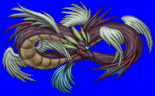
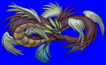
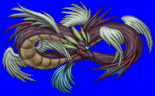
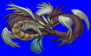

Height: ??? Weight: ???
Habitat: ??? Origin: Greece
Meaning: Greek "snake that eats its own tail"
A snake that appears to be biting its own tail. Oroboros isn't considered a monster, but more of a symbol. One meaning attributed to the endless coils is that of infinity, while another suggests that the head connected to the tail symbolizes death and rebirth. Today, Oroboros is thought to symbolize the endless cycle of progress of humanity and its evolving ideologies.